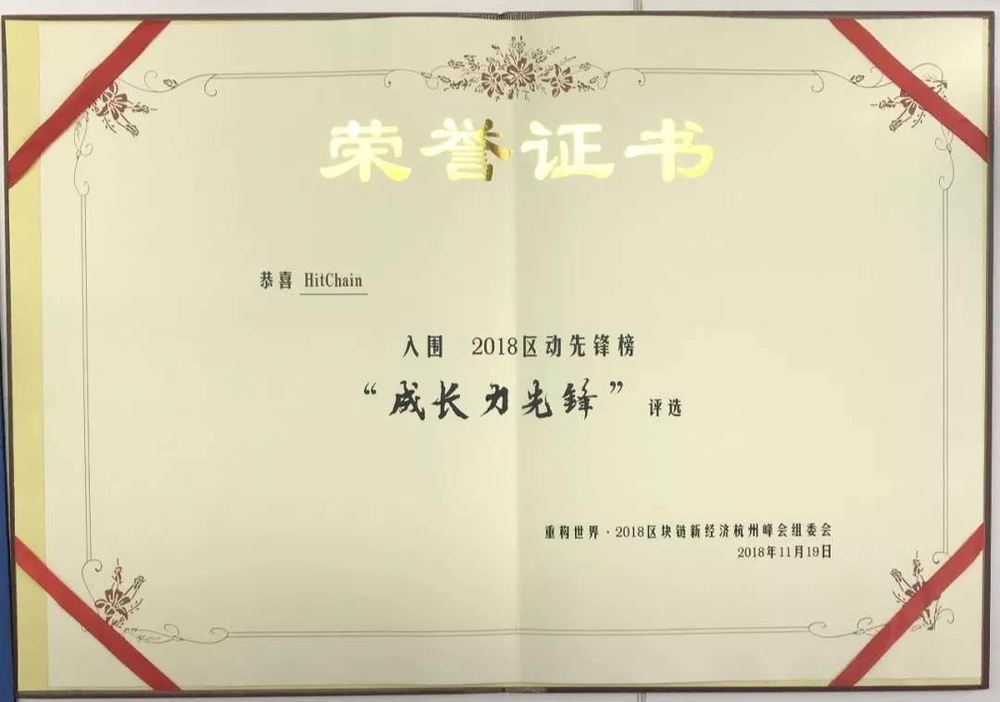

HitChain 项目双周报（2018年第7期）：11月17日～12月2日
HitChain受邀参加重构世界·2018区块链新经济杭州峰会，HitChain资深架构师陈照携技术团队全程参与此次会议，并入围2018区动先锋榜，获得“成长力先锋”奖。
1. 新闻回顾
1）11月19日至20日，HitChain受邀参加重构世界·2018区块链新经济杭州峰会，此次区块链峰会由杭州市政府主办，峰会以“技术驱动经济”为主题，共举行了24场主旨演讲和6场圆桌论坛。HitChain资深架构师陈照携技术团队全程参与此次会议，并入围2018区动先锋榜，获得“成长力先锋”奖。

2. 项目进展
1）设计了Hithub并发测试方案：通过kubernetes控制多个docker同时访问Hithub，进行Hit操作。
2）设计了ipfs api以及hit api在不同操作系统中使用情况的测试方案：容纳包括windows操作系统、linux操作系统和mac操作系统。
3）设计了零知识验证改进方案：
a、启动守护进程时随机产生一对临时的公私钥；
b、通过客户端私钥签名，服务端公钥解密的方式，防止内容篡改；
c、服务端随时更新节点变更的临时公钥信息。
4）设计了多服务节点中下，客户端根据网络情况动态初始化的方案：
a、预先获取各服务节点的网络延迟；
b、根据延迟默认自动选择服务器；
c、客户端可以手动指定预连接服务器。
5）根据设计的 HIT 存储协议实现了一版基于中心化托管代码的版本。
6）设计 HIT API 接口并现部分功能。
7）转换部分 Scala 代码为 Java 代码。
 (扫码关注官方账号）
(扫码关注官方账号）